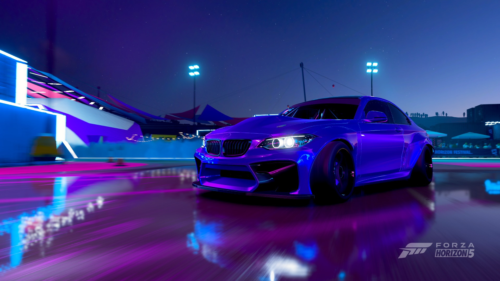
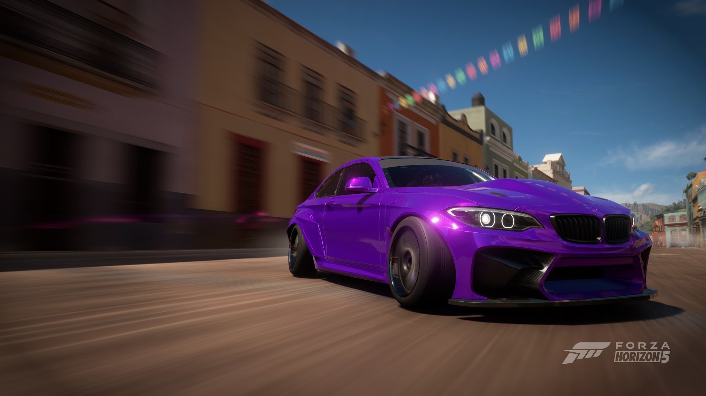
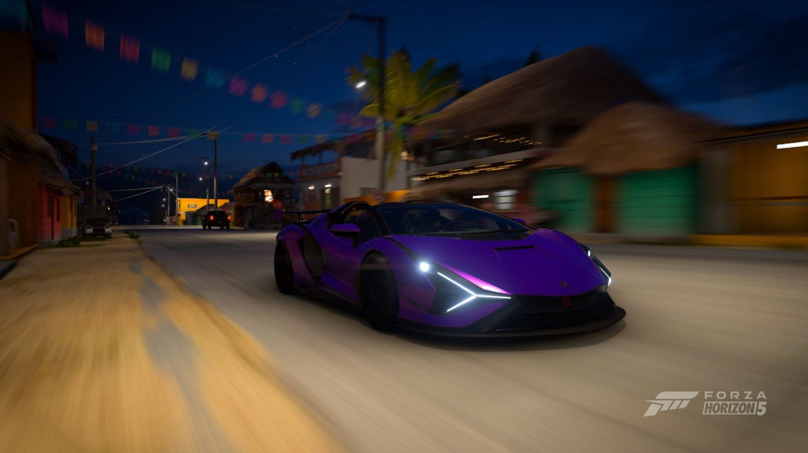
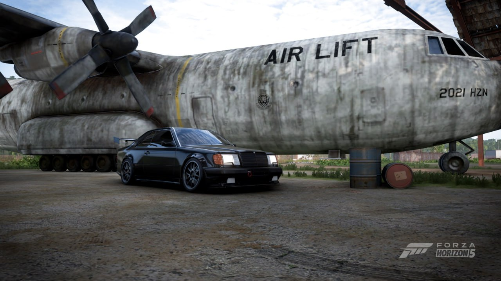

Forza Horizon 5 is a racing video game set in an open world environment based in a fictional representation of Mexico. The game has the largest map in the entire Forza Horizon series, being 50% larger than its predecessor, Forza Horizon 4, while also having the highest point in the Horizon series.
The map was described by creative director Mike Brown as one of the most diverse Forza Horizon maps the team has built. The map contains an active caldera volcano, jungles and beaches, ancient Mayan temples, and towns and cities such as Guanajuato. Players can explore the open world freely, though they can also compete in multiplayer races and complete the campaign mode.
BMW was created in 1917 from the Munich firm Rapp-Motorenwerke. The company was incorporated into Knorr-Bremse AG in 1920 before being refounded as BMW AG in 1922. It was the successor of Bayerische Flugzeugwerke AG, founded in 1916. 1916 is therefore considered BMW's founding year.
 In 1963, Ferruccio Lamborghini founded the company Automobili Lamborghini in Sant'Agata Bolognese, Italy. He assembled a team of talented engineers, including Giotto Bizzarrini and Gianpaolo Dallara, to develop his vision of a perfect sports car.
Lamborghini designed and built his first car – the 350GTV – in only four months, just in time for an unveiling at the 1963 Turin motor show. Despite the favourable press reviews, the 350GTV was a one-off, with Lamborghini re-working the production model and calling it the 350GT.
In 1902, an Austrian automobile entrepreneur, Emil Jellinek, trademarked the name “Mercedes” after his daughter, Mercedes Jellinek. Karl Benz and Gottlieb Daimler later combined their companies in 1926, and thus began the production of the first brand-name Mercedes-Benz models.
